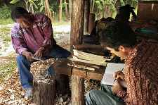

I’ve taught at W&M since 1993. I’m originally from California, and my graduate and undergraduate work was at UCLA. I have a joint position at W&M in English and Linguistics.

My research focuses on language documentation. Part of that work involves fieldwork and basic reference works (dictionaries, grammars, collections of stories). A second part involves language maintenance (literacy workshops, teacher training, language textbooks). A third part involves training others to be linguists.
So far I’ve concentrated on the Native languages of the American South, especially Muskogee (or Creek), Miccosukee, Koasati, and Choctaw. Most of my fieldwork has been in eastern Oklahoma, south Florida, and western Louisiana. Much of my work is collaborative:
- On Muskogee, I worked closely with the late Margaret Mauldin and her sister Juanita McGirt, with Chumona Deere and staff at the Muscogee (Creek) Nation, as well as with teachers and staff at the Seminole Nation’s Pumvhakv Immersion School.
- On Miccosukee, I’ve worked with Carol Cypress and Virginia Tommie at the Seminole Tribe’s Ah-Tah-Thi-Ki Museum, and with Jeannette Cypress and Mary Jene Koenes at Ahfachkee School.
- On Koasati, I’ve collaborated with Linda and Bertney Langley and the Coushatta Heritage Department.
- On Choctaw, I have worked with the Choctaw Nation of Oklahoma on a modern dictionary of Choctaw. Some students and I also edited a new edition of Cyrus Byington’s Choctaw dictionary. In 2020 I began working with the Mississippi Band of Choctaw Indians on oral history and lexicography.
Explore Publications by Language: Our publications have been reorganized into dedicated language archives with direct links to free open-access texts and preprints. Browse Muskogee (Creek), Koasati, Miccosukee, Choctaw, or Cross-Linguistic & Multi-Language Studies, or view the complete list on the All Publications page.
Language Documentation Websites
I maintain several dedicated web resources supporting language documentation and community revitalization:
Muskogee (Creek) Portal
Grammar resources, dictionaries, audio recordings, and texts documenting the Creek / Muskogee language.
Koasati Language Portal
Documentation, grammatical studies, and community collaborative resources with the Coushatta Tribe of Louisiana.
Choctaw Language Portal
Lexicography, Byington's dictionary digital edition, and collaborative research with Choctaw communities.
Research & Teaching
I tend to study whatever is unusual about a language. That leads me to study everything from phonetics to syntax and language change. Studying these specific areas helps me understand language in general and the functional basis of grammatical constructions.
At W&M, I teach Study of Language, Language Patterns, Linguistic Field Methods, Language Documentation, and Historical Linguistics. I have also taught at the University of Michigan, Rice University, Leiden University, the University of Oklahoma, the University of Florida, at CoLang, and at the LSA Summer Linguistic Institute.